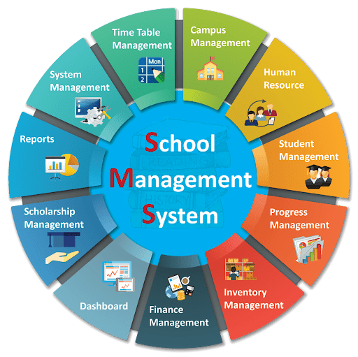

<div class="bgcheck">
    <div class="container">
        <div class="bodyAlign" data-aos="zoom-in">
            <div class="card headerTag my-4">
                <span class="m-2">SCHOOL MANAGEMENT SYSTEM</span>
            </div>
        </div>
        <div class="row contentText">
            <div class="col-sm-12 col-md-6 mb-4" data-aos="fade-right">
                <p>We Provide Dynamic reporting, charting and tracking tools found within our school management solutions give you a real-time view of everything that’s happening in the school.</p>
                <P>You can quickly analyse the progress of individual students, groups, classes or year groups to help you strengthen your strategies for change and improvement, to close attainment gaps.</P>
                <P>Our school management system brings together all of your assessment, attendance, behaviour, pupil and staff data into one system. It provides a powerful suite of intuitive tools that will enable you to easily manage your data and analyse it to identify trends that will inform school strategies for change and improvement.</P>
                <P>Our school management software is a robust system that lets schools go paperless and streamline the tedious administrative tasks on a single platform by bringing automation into the picture and our school management system software is powered with cloud computing and equipped with the latest technologies.</P>
            </div>
            <div class="col-sm-12 col-md-6 mb-4">
                
            </div>
  
  
  